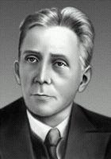

| Люди |
| Исторические сюжеты |
| Филдсовские медали |
| Древо Лузина |
| Министры образования |
Алфавитный каталог
А
Б
В
Г
Д
Е
Ж
З
И
К
Л
М
Н
О
П
Р
С
Т
У
Ф
Х
Ц
Ч
Ш
Щ
Э
Ю
Я
A B C D E F G H I J K L M N O P Q R S T U V W X Y Z
A B C D E F G H I J K L M N O P Q R S T U V W X Y Z
|
|
|  |
Хинчин Александр Яковлевич
(07.07.1894 - 18.11.1959)
Александр Яковлевич Хинчин. Б.Гнеденко. "Квант", 1994, ?6.
Источник: Математический энциклопедический словарь. М., Сов. энциклопедия, 1988
Древо Лузина
/Лузин Н. Н. /Хинчин А. Я.Книги
Новости
04.08.2018
Присуждены Филдсовские премии-2018
30.07.2018
Прошла летняя школа «Современная математика», теперь имени Виталия Арнольда.
04.12.2014
доступны труды А.Н.Крылова и А.Пуанкаре
01.10.2015
"Мат.этюды" выпустили книгу «Математическая составляющая».
06.03.2013
Новые
арифметические ребусы для iГаджетов
Учительская | Консультации | История математики | Задачи | Учредители и спонсоры | Вход для редакторов
© Copyright